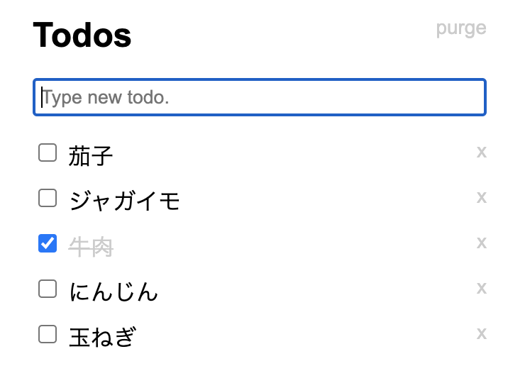
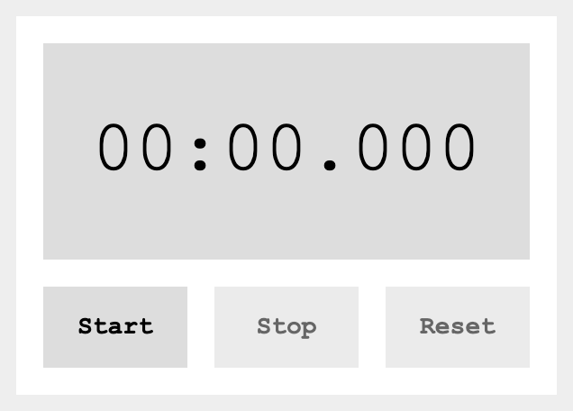
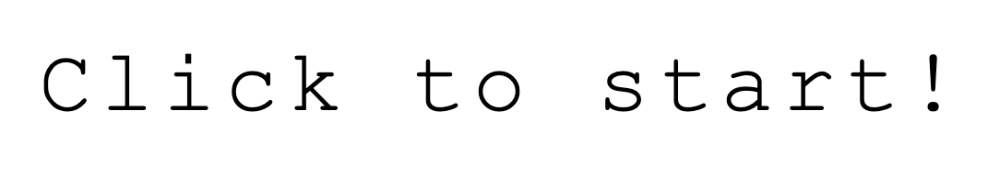
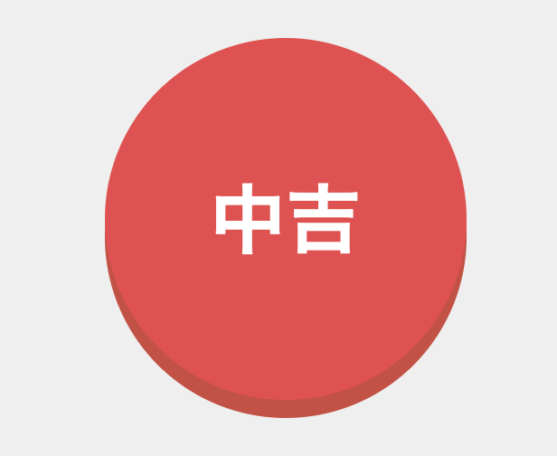

PHP
MySQLを使ってデータを追加, 削除できるようなTodoアプリを作りました.
非同期通信を用いて整合性が取れるようになっています.
また, CSRF対策も行なっています.
このアプリはGitHubPagesでは実装できないため, Webサイトがありません. 将来的にはレンタルサーバを使って公開できたらいいなと思っています.
ソースコードはこちら
主にドットインストールというプログラミング学習サイトで勉強しています.
MySQLを使ってデータを追加, 削除できるようなTodoアプリを作りました.
非同期通信を用いて整合性が取れるようになっています.
また, CSRF対策も行なっています.
このアプリはGitHubPagesでは実装できないため, Webサイトがありません. 将来的にはレンタルサーバを使って公開できたらいいなと思っています.
ソースコードはこちら
JavaScriptを使ってカレンダーを作りました.
 MyStopWatchJavaScriptを使ってストップウォッチを作りました.
 MyTypingGameJavaScriptを使ってタイピングゲームを作りました
 MyOmikujiJavaScriptを使っておみくじを作りました
初めて学習したプログラミング言語です.
大学1〜2回生まで勉強していました.
スタックやキュー, 二分木などのデータ構造使った探索, ソートができます.
大学の研究に使うために正規表現を使ってレジスタの繋がりを取得するプログラムを作りました.
大学のデータベースの授業で使いました.
最初は正規化が理解しづらくて大変でした(笑)
こちらはあまり使う予定が無かったのでざっと学習した程度です.